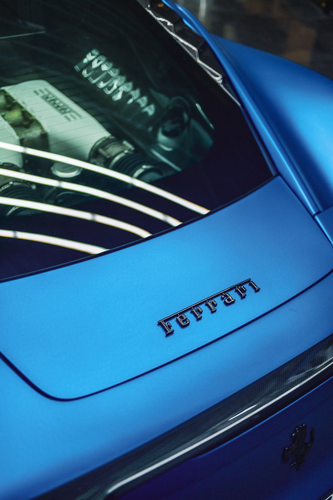
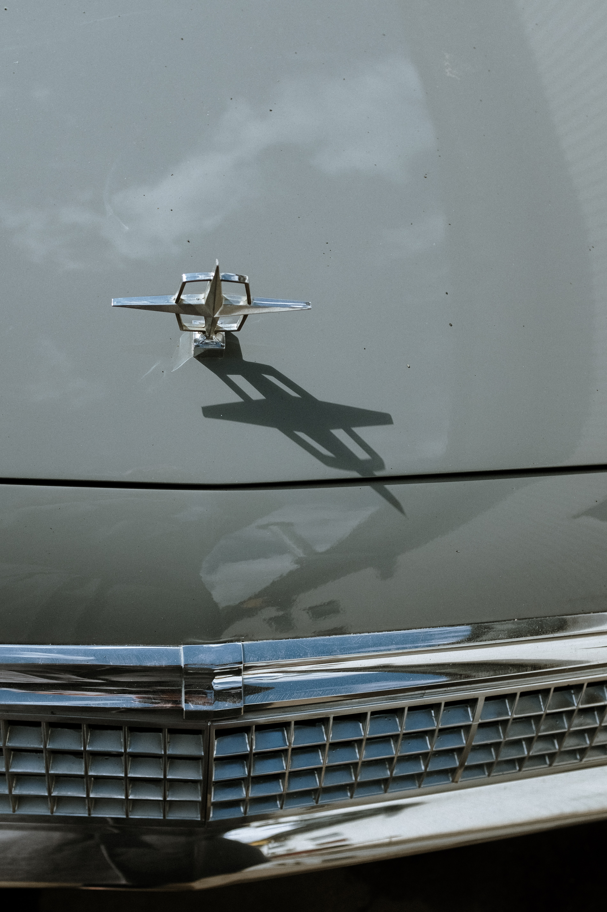
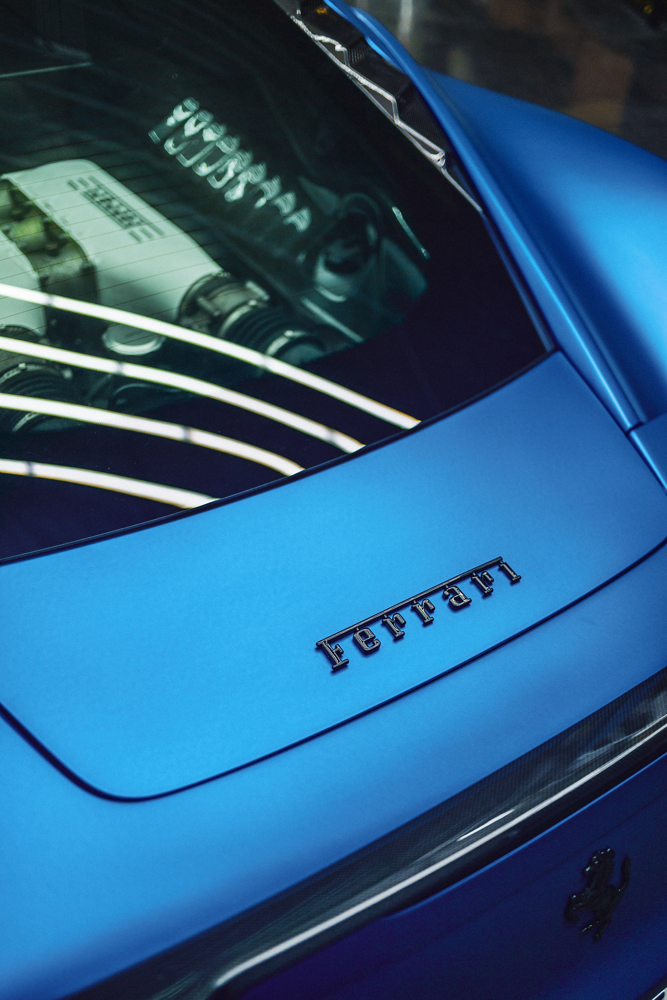
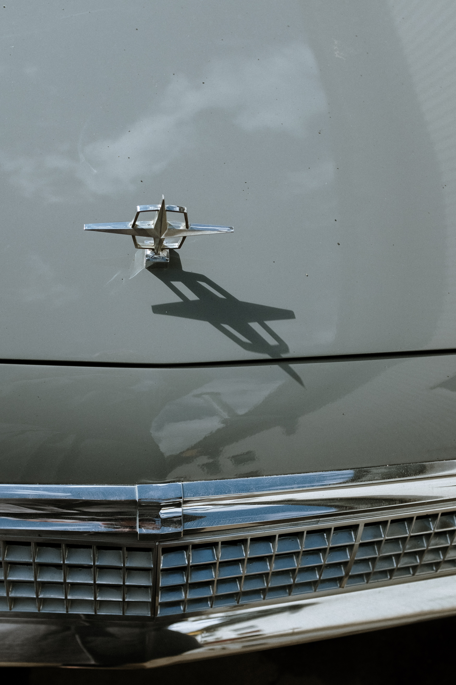
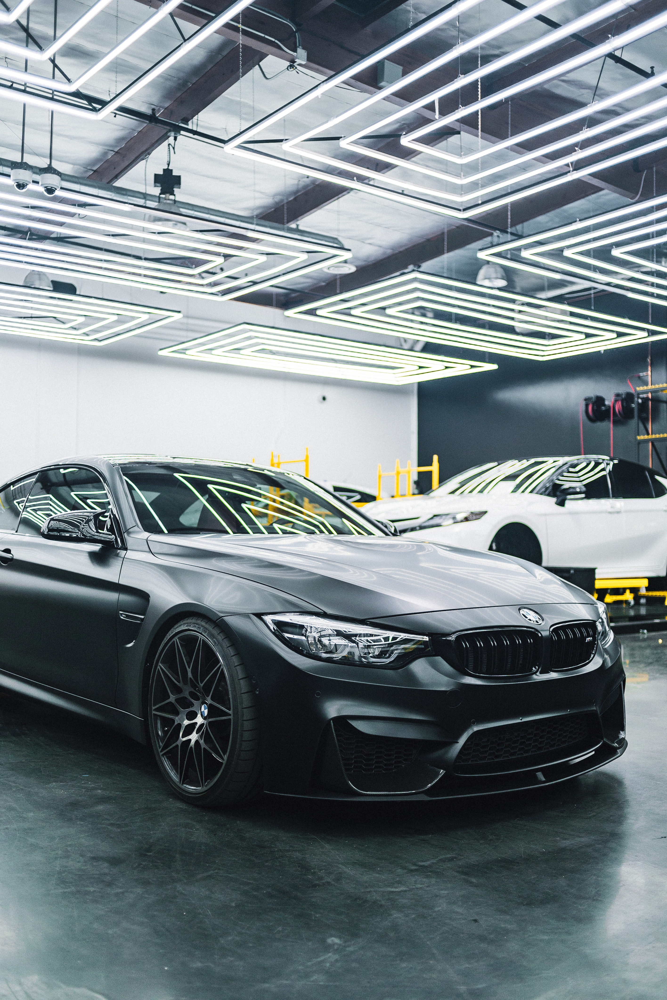
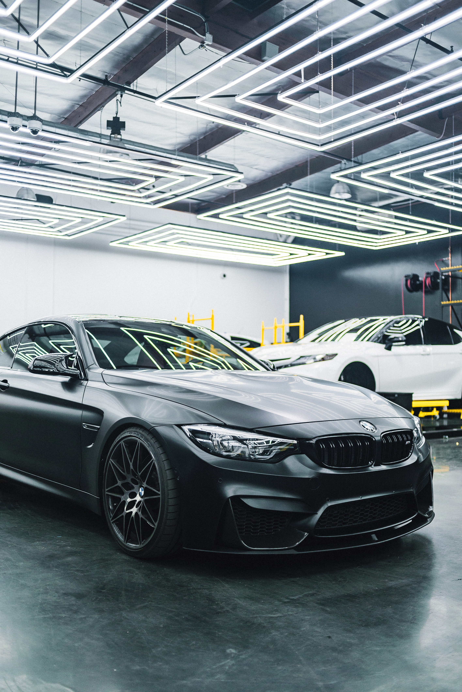

Naszą misja jest przywracać i utrzymywać nieskazitelny wygląd Twojego pojazdu, niezależnie od jego wieku czy rodzaju. Wykorzystując najnowocześniejsze techniki i najwyższej jakości materiały, gwarantujemy, że Twoje auto będzie wyglądać jak nowe. Oferujemy szeroki zakres usług, od prostego mycia, przez renowację wnętrza, aż po zaawansowane polerowanie i zabezpieczanie karoserii. Skontaktuj się z nami już dziś, aby dowiedzieć się więcej o tym, jak możemy odmienić wygląd Twojego auta

Mycie Karoserii to kluczowy element naszej oferty, zapewniający Twojemu pojazdowi nieskazitelny i lśniący wygląd. Wykorzystujemy specjalistyczne, delikatne dla lakieru środki czystości, które skutecznie usuwają zanieczyszczenia bez ryzyka uszkodzenia powłoki ochronnej. Proces ten nie tylko poprawia estetykę auta, ale także wydłuża żywotność lakieru, chroniąc go przed szkodliwymi skutkami działania środowiska. Skorzystaj z naszej usługi mycia karoserii, aby przywrócić swojemu samochodowi blask, który przyciąga wzrok.

Renowacja Lamp to jeden z naszych specjalnych serwisów, który odnawia blask Twoich reflektorów samochodowych. Z czasem, warunki atmosferyczne i zanieczyszczenia mogą powodować matowienie i zżółknięcie lamp, co skutkuje nie tylko gorszą estetyką, ale przede wszystkim osłabia moc świateł, co może wpływać na bezpieczeństwo. Nasz serwis oferuje profesjonalne czyszczenie, polerowanie oraz zabezpieczanie lamp, przywracając im oryginalny wygląd i funkcjonalność. Przywróć blask swoim reflektorom i ciesz się lepszą widocznością oraz bezpieczną jazdą, niezależnie od pory dnia.
Czyszczenie i Pranie Wnętrza to usługa, która zapewnia nie tylko estetykę, ale przede wszystkim higienę Twojego samochodu. Codzienne użytkowanie pojazdu prowadzi do gromadzenia się brudu, plam, nieprzyjemnych zapachów, a nawet alergenów, które mogą mieć negatywny wpływ na komfort i zdrowie pasażerów. Nasz zespół wykorzystuje specjalistyczne środki czystości oraz nowoczesne metody, aby skutecznie i delikatnie oczyścić wszystkie elementy wnętrza - od tapicerki, poprzez dywaniki, aż po deskę rozdzielczą. Zadbaj o świeżość i czystość swojego samochodu, tworząc przyjemne środowisko dla siebie i swoich pasażerów.

Nasza usługa korekcji i zabezpieczenia lakieru to najwyższej jakości profesjonalne rozwiązanie dla Twojego samochodu. Korzystając z nowoczesnych technologii i najbardziej zaawansowanych materiałów na rynku, nasi specjaliści precyzyjnie analizują stan powierzchni lakieru, identyfikując wszelkie niedoskonałości, takie jak rysy, wybrzuszenia czy przebarwienia. Następnie dokonujemy szczegółowej korekcji, z użyciem specjalistycznych narzędzi, przywracając lakier do jego pierwotnej świetności. Po korekcji lakier jest zabezpieczany wysokiej jakości produktami, które tworzą na jego powierzchni odporne i długotrwałe zabezpieczenie. Te innowacyjne preparaty chronią lakier przed szkodliwymi czynnikami zewnętrznymi, takimi jak promieniowanie UV, kwaśne deszcze, sól drogowa czy drobiny kurzów.
Jesteśmy firmą specjalizującą się w kompleksowej pielęgnacji aut – Auto Detailing. Z dumą dostarczamy naszym klientom usługi na najwyższym poziomie, łącząc pasję do samochodów z profesjonalizmem i precyzyjnością. Nasza historia rozpoczęła się kilka lat temu, kiedy zdecydowaliśmy przekształcić naszą miłość do motoryzacji w rzemiosło, które pozwala nam dbać o Twoje auto tak, jakby było naszym własnym. Naszym priorytetem jest dbałość o każdy detal, stąd nazwa naszej firmy. Wierzymy, że nawet najdrobniejsze elementy mają ogromne znaczenie dla całokształtu, dlatego zawsze dokładamy wszelkich starań, aby nasze usługi były perfekcyjne pod każdym względem. Dysponujemy nowoczesnym sprzętem, a także korzystamy z najnowszych technologii dostępnych na rynku. Nasz zespół składa się z doświadczonych specjalistów, którzy są stale szkoleni i rozwijają swoje umiejętności, aby móc sprostać każdemu, nawet najbardziej wymagającemu zadaniu. Jesteśmy dumni, że możemy pomóc w utrzymaniu Twojego samochodu w nienagannej kondycji, zwracając uwagę na najdrobniejsze szczegóły. Dla nas, auto detailing to nie tylko praca, ale przede wszystkim pasja. Serdecznie zapraszamy do skorzystania z naszych usług.


 



 
